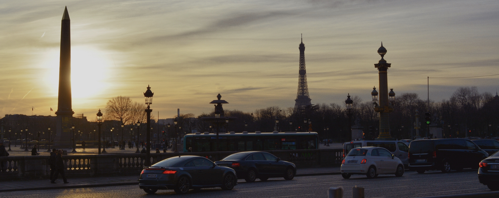
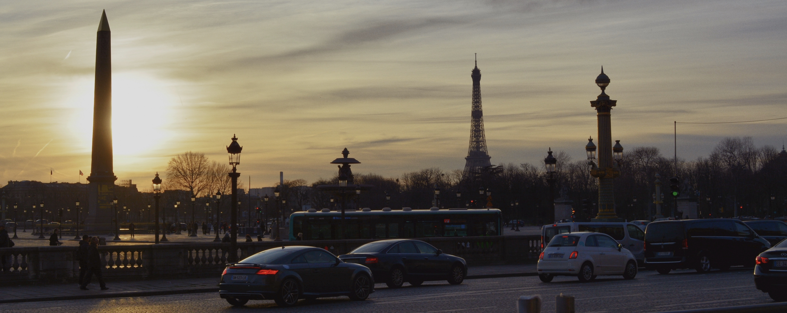
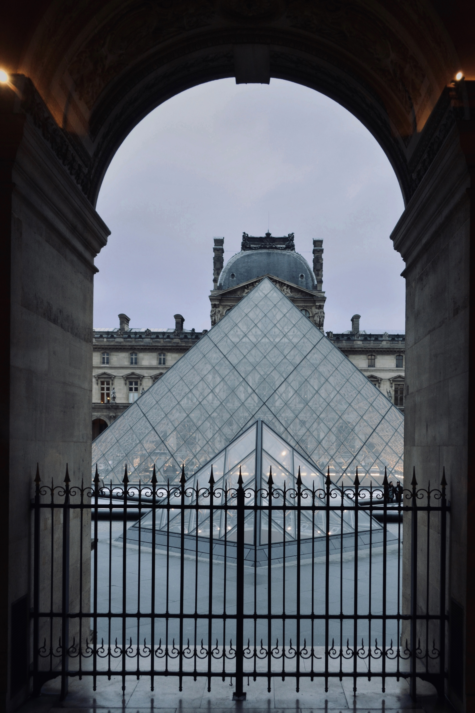
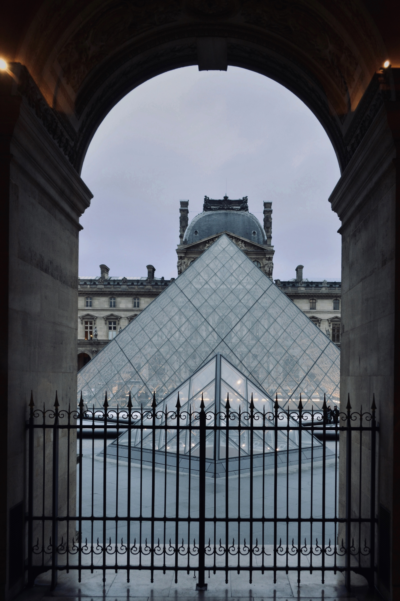
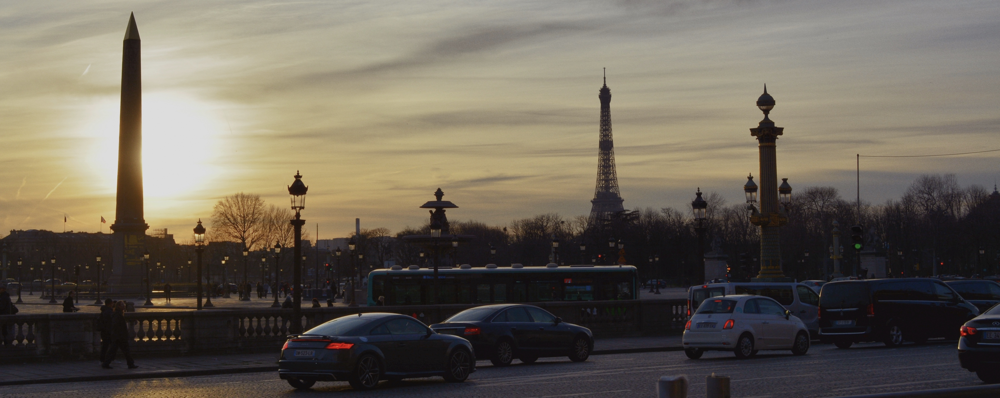
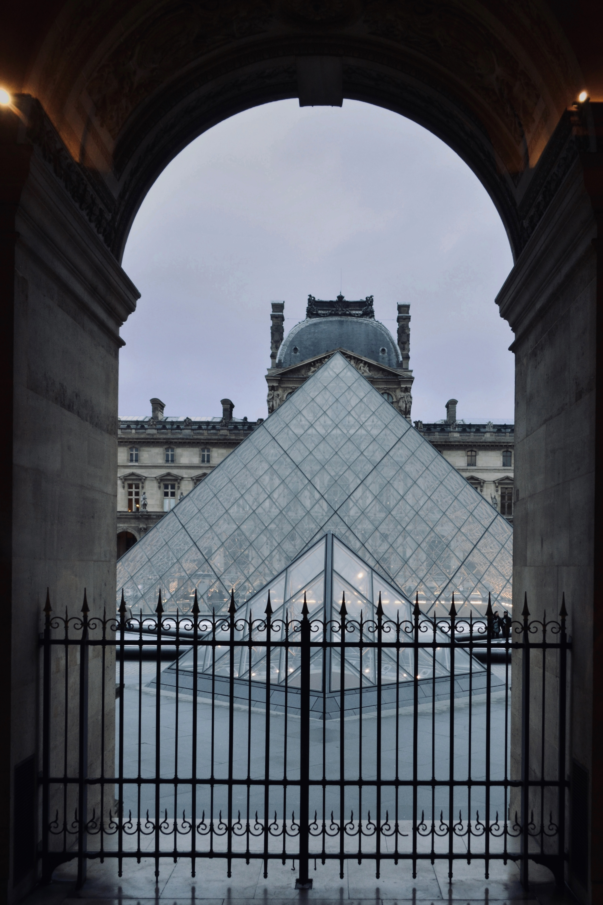

 



All of these photos, with the exception of two were taken with a range of iPhones (the oldest being a 11 Pro Max and the newest a 13 Pro Max). I also color graded them with the Photoleap App for the iPhone. The two outliers were taken with a NIKON D5200, which is my old DSLR. I decided not to watermark them or place a copyright label because I feel it would ruin the quality and aesthetic I was going for. Feel free to use the photos as wallpaper or whatever else your hearts desire to. I hope y'all enjoy them!

